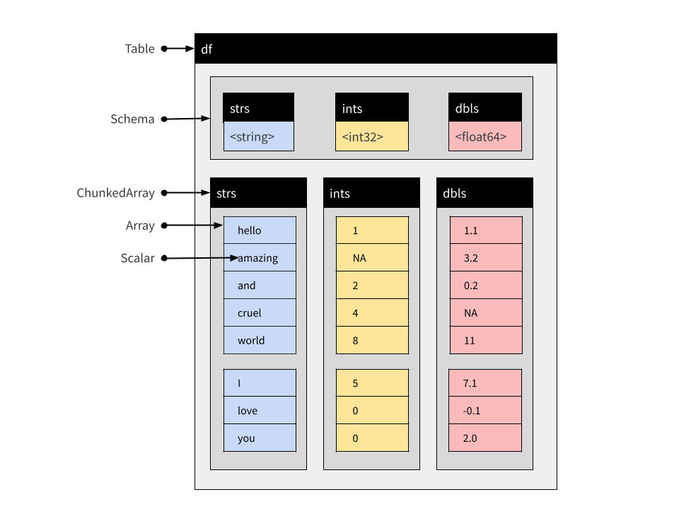

![]()
library(arrow, warn.conflicts = FALSE)
library(dplyr, warn.conflicts = FALSE)Hello again lovely people. I am, once again, blogging about Apache Arrow and I’m not even sorry. Oh well.
In an earlier post I wrote about Tables and other in-memory data structures that Arrow uses to represent data objects. That meant the bulk of the post was focused on Record Batch and Table objects and the constituent objects used to define columns in one of these things (Arrays and Chunked Arrays).
What I didn’t really talk about in that post was Datasets, which are used to represent data (typically larger-than-memory data) that are stored on-disk rather than in-memory. Okay, fine, yeah. Technically I did include a section on Datasets at the end of the post, but I was a bit evasive. I gave an example showing how to use Datasets, but I really didn’t talk much about what they are.
I had a very good reason for this, dear reader, and that reason is this: when I wrote that post I had no f**king idea whatsoever how Datasets worked. I knew how to use them, but if you’d asked me questions about how the magic works I couldn’t have told you.1
Since that time I’ve learned a few things, and because I’m an annoying person I’m going to tell you about them.2
Quick recap: Record Batches and Tables
At this point I’ve written quite a few posts about Arrow, and it’s not necessarily a good idea for me to assume that you’ve had the misfortune to read all3 of them. So here’s a quick recap of some of the key Arrow data structures that I’ve talked about in other posts…
Let’s start with Record Batches. A Record Batch is tabular data structure comprised of named Arrays,4 and an accompanying Schema5 that specifies the name and data type associated with each Array. We can create one manually using record_batch()
rb <- record_batch(
strs = c("hello", "amazing", "and", "cruel", "world"),
ints = c(1L, NA, 2L, 4L, 8L),
dbls = c(1.1, 3.2, 0.2, NA, 11)
)
glimpse(rb)RecordBatch
5 rows x 3 columns
$ strs <string> "hello", "amazing", "and", "cruel", "world"
$ ints <int32> 1, NA, 2, 4, 8
$ dbls <double> 1.1, 3.2, 0.2, NA, 11.0This is a Record Batch containing 5 rows and 3 columns. The command rb[1:3, 1:2] extracts the first three rows and the first two columns:
glimpse(rb[1:3, 1:2])RecordBatch
3 rows x 2 columns
$ strs <string> "hello", "amazing", "and"
$ ints <int32> 1, NA, 2The structure of a Record Batch is shown below. In addition to the three Arrays specifying the columns, it includes an explicit Schema object containing relevant metadata:

Record Batches are a fundamental unit for data interchange in Arrow, but are not typically used for data analysis. The reason for this is that the constituent Arrays that store columns in a Record Batch are immutable: they cannot be modified or extended without creating a new object.6 When data arrive sequentially Record Batches can be inconvenient, because you can’t concatenate them. For that reason Tables are usually more practical…
So let’s turn to Tables next. From the user perspective a Table is very similar to a Record Batch but the constituent parts are Chunked Arrays. Chunked Arrays are flexible wrappers enclosing one or more Arrays.7 This makes it possible to concatenate tables. To quickly illustrate this, let’s first convert the rb Record Batch to a Table using arrow_table():
df1 <- arrow_table(rb)Now we create a second Table with the same column names and types, again using arrow_table():
df2 <- arrow_table(
strs = c("I", "love", "you"),
ints = c(5L, 0L, 0L),
dbls = c(7.1, -0.1, 2)
)We can concatenate these using concat_tables():
df <- concat_tables(df1, df2)
glimpse(df)Table
8 rows x 3 columns
$ strs <string> "hello", "amazing", "and", "cruel", "world", "I", "love", "you"
$ ints <int32> 1, NA, 2, 4, 8, 5, 0, 0
$ dbls <double> 1.1, 3.2, 0.2, NA, 11.0, 7.1, -0.1, 2.0The structure of this Table ject is similar to the structure of the Record Batch object I showed earlier, but the columns are Chunked Arrays rather than simple Arrays:
 You can see this if we print out a single column:
df$strsChunkedArray
<string>
[
[
"hello",
"amazing",
"and",
"cruel",
"world"
],
[
"I",
"love",
"you"
]
]There’s a visual separation there between the different chunks, used to indicated where the boundaries between individual Arrays are. In practice though you actually don’t have to care about this because it’s not semantically meaningful. It’s there for purely technical reasons.
But all this is background. So let’s move on, shall we?
So… Datasets?
Okay, what about Datasets? Like Record Batch and Table objects, a Dataset is used to represent tabular data. At an abstract level, a Dataset can be viewed as an object comprised of rows and columns, and just like Record Batches and Tables, it contains an explicit Schema that specifies the name and data type associated with each column.
However, where Tables and Record Batches are data explicitly represented in-memory, a Dataset is not. Instead, a Dataset is an abstraction that refers to data stored on-disk in one or more files. Reading the data takes place only as needed, and only when a query is executed against the data. In this respect Arrow Datasets are a very different kind of object to Arrow Tables, but the arrow package is written in a way that the dplyr commands used to analyze Tables can also be applied to Datasets.

What is a Dataset on-disk?
Reduced to its simplest form, the on-disk structure of a Dataset is simply a collection of data files, each storing one subset of the data. These subsets are sometimes referred to as “fragments”, and the partitioning process is sometimes referred to as “sharding”. To illustrate how this works, I’ll write a multi-file dataset to disk manually, without using any of the Arrow Dataset functionality to do the work. I’ll keep it deliberately simple and use three small data frames, each containing one subset of the data we want to store:
df_a <- data.frame(id = 1:5, value = rnorm(5), subset = "a")
df_b <- data.frame(id = 6:10, value = rnorm(5), subset = "b")
df_c <- data.frame(id = 11:15, value = rnorm(5), subset = "c")Our intention is that each of the data frames should be stored in a separate data file. As you can see, this is a quite structured partitioning: all data where subset = "a" belong to one file, all data where subset = "b" belong to another file, and all data where subset = "c" belong to the third file.
The first step is to define and create a folder that will hold all the files:
ds_dir <- "mini-dataset"
dir.create(ds_dir)The next step is to manually create a “Hive-style”8 folder structure:
ds_dir_a <- file.path(ds_dir, "subset=a")
ds_dir_b <- file.path(ds_dir, "subset=b")
ds_dir_c <- file.path(ds_dir, "subset=c")
dir.create(ds_dir_a)
dir.create(ds_dir_b)
dir.create(ds_dir_c)Notice that we have named each folder in a “key=value” format that exactly describes the subset of data that will be written into that folder. This naming structure is the essence of Hive-style partitions.
Now that we have the folders, we’ll use write_parquet() to create a single parquet file9 for each of the three subsets:
write_parquet(df_a, file.path(ds_dir_a, "part-0.parquet"))
write_parquet(df_b, file.path(ds_dir_b, "part-0.parquet"))
write_parquet(df_c, file.path(ds_dir_c, "part-0.parquet"))If I’d wanted to, I could have further subdivided the dataset. A folder can contain multiple files (part-0.parquet, part-1.parquet, etc) if we would like it to, though there’s no point whatsoever in doing that with such a tiny dataset. Similarly, there is no requirement to name the files part-0.parquet this way at all: it would have been fine to call these files subset-a.parquet, subset-b.parquet, and subset-c.parquet if I’d wanted to do that. I only chose part-0.parquet because that’s the default filename that the write_dataset() function in the arrow package generates!
Along the same lines, it isn’t necessary to use Hive-style partitions to use Arrow Datasets. The default behaviour of write_dataset() is to construct Hive-style partitions, and the default in open_dataset() is to look for Hive-style partitions, but it isn’t required.
In any case, I’ve created an on-disk parquet Dataset using Hive-style partitioning. My Dataset is defined by these files:
list.files(ds_dir, recursive = TRUE)[1] "subset=a/part-0.parquet" "subset=b/part-0.parquet"
[3] "subset=c/part-0.parquet"This is exciting, right? I mean, I’m excited. How could anyone not be completely enthralled by this thrilling exposition?
Aaaaanyway…. to verify that everything has worked, I’ll now try to open the data with open_dataset() and call glimpse() to inspect its contents:
ds <- open_dataset(ds_dir)
glimpse(ds)FileSystemDataset with 3 Parquet files
15 rows x 3 columns
$ id <int32> 1, 2, 3, 4, 5, 6, 7, 8, 9, 10, 11, 12, 13, 14, 15
$ value <double> 0.818450401, -0.660289959, -1.434731033, 0.802913100, -0.00333…
$ subset <string> "a", "a", "a", "a", "a", "b", "b", "b", "b", "b", "c", "c", "c…
Call `print()` for full schema detailsAs you can see, the ds Dataset object aggregates the three separate data files. In fact, in this particular case the Dataset is so small that values from all three files appear in the output of glimpse().
Now, it’s pretty obvious that I wouldn’t use this workflow in my everyday life. Manually writing individual files like this is tiresome, especially when the exact same dataset can be created with the following command:
ds |>
group_by(subset) |>
write_dataset("mini-dataset")As an aside, even if ds happens to refer to an on-disk Dataset that is larger than memory, and you’re just wanting to rewrite it with a different file structure, this pipeline should still work without any risk of an out-of-memory error. This is thanks to the Dataset backpressure functionality10 in which the reader will back off and slow down if the writer has fallen too far behind and the memory cache is filling up. Or something like that. Look, I almost managed to make myself care about the details, okay?
What’s stored in-memory by the Dataset?
Assuming I have any readers left at this point in the post, I know what you’re all thinking:
Yes okay Danielle that’s fine, I get it, a Dataset is just a bunch of files on disk. But actually I already knew that. There has to be something in-memory though right? What’s that thing? Tell me about that.
First off, rude. I was getting to it! Second, yes you are totally right. Sorry. So okay, in the last section I created this the ds object. Like most objects created by the arrow package, it’s an R6 object with a bunch of fields and methods that are used to wrap bindings to the corresponding Arrow C++ dark magic… sorry, um, methods. Anyway, for our purposes there are two things of importance: the ds object has an active binding specifying the Schema of the Dataset, and another one specifying the paths to all the files. That’s pretty much it. Paths to these files are stored in an active binding ds$files:
ds$files [1] "/home/danielle/GitHub/sites/quarto-blog/posts/2022-11-20_unpacking-arrow-datasets/mini-dataset/subset=a/part-0.parquet"
[2] "/home/danielle/GitHub/sites/quarto-blog/posts/2022-11-20_unpacking-arrow-datasets/mini-dataset/subset=b/part-0.parquet"
[3] "/home/danielle/GitHub/sites/quarto-blog/posts/2022-11-20_unpacking-arrow-datasets/mini-dataset/subset=c/part-0.parquet"The Schema is stored as ds$schema:
ds$schemaSchema
id: int32
value: double
subset: string
See $metadata for additional Schema metadataBy default this Schema is inferred by open_dataset() by inspecting the first file only, though it is possible to construct a unified schema after inspecting all files. To do this, set unify_schemas = TRUE when calling open_dataset(). It is also possible to use the schema argument to open_dataset() to specify the Schema explicitly (see the schema() function for details).
In any case, in most situations I think it’s reasonable to use this as the mental model of what the ds object contains:
How does a Dataset query work?
Hm. So if the Dataset object11 is essentially nothing more than a Schema and a list of files, what happens at the time a query has to be evaluated? At some point the data (or at least some of it) do have to be read into memory in order to perform the compute operations! I mean, consider the following dplyr pipeline:
ds |>
filter(value > 0) |>
mutate(new_value = round(100 * value)) |>
select(id, subset, new_value) |>
collect() id subset new_value
1 11 c 194
2 12 c 92
3 13 c 24
4 15 c 111
5 1 a 82
6 4 a 80
7 6 b 153
8 9 b 72
9 10 b 134At some point in making this happen, data are loaded and computations are performed. At the user level we don’t really think about it much: the dplyr bindings supplied by the arrow package provide us with an abstraction layer for Datasets that completely mask this aspect of the process. That’s super cool because honestly I don’t care enough to spend my time on that sort of thing, but I also find myself curious… what happens when we strip the abstraction away? How would we do this analysis without these abstractions?
When querying a Dataset, we need a strategy for reading data: this is coordinated by a Scanner object constructed for the specific Dataset and the specific query. When analyzing a Dataset using the dplyr interface you never need to construct a Scanner manually, but for explanatory purposes I’ll create one:
scan <- Scanner$create(dataset = ds)Calling the ToTable() method will materialise the Dataset (on-disk) as a Table (in-memory):12
scan$ToTable()Table
15 rows x 3 columns
$id <int32>
$value <double>
$subset <string>
See $metadata for additional Schema metadataYou can see that this has returned 15 rows (i.e., the whole dataset). If we want to reproduce the behaviour of the dplyr pipeline using the low-level Dataset interface by creating a new scan by specifying the filter and projection arguments to Scanner$create(). The filter argument is used to modify the rows that are returned by the Scanner, and the projection argument is used to modify the columns. These arguments take Arrow Expressions as inputs, which is yet another topic I’ll try to write more about one of these days.
Anyway, the scanner defined below mimics the dplyr pipeline shown above,
scan <- Scanner$create(
dataset = ds,
filter = Expression$field_ref("value") > 0,
projection = list(
id = Expression$field_ref("id"),
subset = Expression$field_ref("subset"),
new_value = Expression$create("round", 100 * Expression$field_ref("value"))
)
)We can check this by calling scan$ToTable() and then converting the result to a data frame so that we get a pretty print out:
scan$ToTable() |> as.data.frame() id subset new_value
1 1 a 82
2 4 a 80
3 6 b 153
4 9 b 72
5 10 b 134
6 11 c 194
7 12 c 92
8 13 c 24
9 15 c 111Yep, that looks about right.
We can dig a little deeper though. To get a better sense of what happens when the query executes, what I’ll call scan$ScanBatches(). Much like the ToTable() method, the ScanBatches() method executes the query separately against each of the files, but it returns a list of Record Batches, one for each file. If we convert each one of those Record Batches to a data frame individually, we get this as a result:
scan$ScanBatches() |> lapply(as.data.frame)[[1]]
id subset new_value
1 1 a 82
2 4 a 80
[[2]]
id subset new_value
1 6 b 153
2 9 b 72
3 10 b 134
[[3]]
id subset new_value
1 11 c 194
2 12 c 92
3 13 c 24
4 15 c 111This version of the result helps you see each part of the Dataset at work in the query. Under the hood, Arrow keeps track of memory usage and doesn’t try to read too many files at once. It will also make use of whatever information it has about the file contents to avoid reading files that it doesn’t have to read: if I filter on subset != "a" then the Scanner will ensure that the files in the corresponding folder are never even read.13
Okay, so now let’s go back to the dplyr query we made earlier, but use compute() to return a Table rather use collect() to return a data frame.
tbl <- ds |>
filter(value > 0) |>
mutate(new_value = round(100 * value)) |>
select(id, subset, new_value) |>
compute()This Table object has been created by concatenating three Record Batches, one for each of the three data files. As a consequence of this, the Chunked Array that defines a column of the Table has the same partitioning structure present in the data files:
tbl$subsetChunkedArray
<string>
[
[
"a",
"a"
],
[
"c",
"c",
"c",
"c"
],
[
"b",
"b",
"b"
]
]What was the point?
Does any of this matter? Well. That depends, I suppose. If you’re looking to analyse a Dataset using R, you don’t really need to know much of this. Frankly you probably don’t need to know any of it. But also there’s something uncomfortable about using tools when you don’t quite know what they’re doing. It makes me happier when I know just a little bit more than I actually need to know. More importantly, it matters in the sense that it works. Using Datasets leads to shockingly fast performance on data that would not normally be amenable to analysis with R. Which… yeah, that does matter quite a bit!
Footnotes
Unbelievably, there are people out there who will start talking about predicate pushdown and not even give a girl a heads up? Rude. You don’t see me starting conversations at the pub about metric axiom violations in human similarity judgment do you? Well, okay, you might. But that’s not the point!↩︎
Okay, now I’m a bit sorry.↩︎
Or indeed, “any”.↩︎
For the purposes of this post we are going to pretend that Arrays behave like R vectors, which… they sort of do as long as you don’t try to push at the analogy too hard.↩︎
The Schema is the way Arrow formalises the metadata for rectangular data structures. I’m not going to dive into the details here: it’s enough for our purposes to recognise that it’s basically a list of variable names and their data types.↩︎
I mean, this is where you start asking all sort of questions about what objects are mutable in R anyway, since we’re almost never doing modify-in-place operations. But whatever. This is not the post for that, and if you try to make me talk about that here I will cry.↩︎
Again, let’s just pretend that a Chunked Array behaves just like an R vector, except for the fact that it has these weird stitches from where we’ve sewn the individual Arrays together. It’s all a bit vivisectionist in nature, sure, but this is the mechanism that allows Chunked Arrays to behave more like R vectors than simple Arrays do. Dr Frankenstein may not have been entirely wrong on all counts, I guess.↩︎
The name comes from Apache Hive: hive.apache.org.↩︎
One of these days I am going to write a proper blog post on parquet files for R users, I promise. I just don’t seem to have found the time yet. Not sure where all the time goes…↩︎
As usual there is esoteric knowledge buried in the C++ documentation, in this case describing backpresure control. It’s probably ancient forbidden lore and Dumbledore is going to turn me into a hobbit or something but whatever.↩︎
Strictly speaking I am assuming a FileSystemDataset and not a more esoteric kind of Dataset like an InMemoryDataset or a UnionDataset, and I am assuming that there is a one to one mapping between files and Fragments, but honestly those assumptions are usually true in everyday data analysis and if you know these distinctions already you certainly shouldn’t be using this post to learn about Datasets now should you? So the only reason you’d be bringing this up would be to correct me on the internet to show off how smart you are and that really would be just a dick move. Just saying.↩︎
The scanning process is multi-threaded by default, but if necessary threading can be disabled by setting
use_threads = FALSEwhen callingScanner$create().↩︎For files formats like Parquet that include metadata for row groups and organise data column-wise, there are additional optimisations ensuring that you don’t have to read the whole file.↩︎
Reuse
Citation
BibTeX citation:
@online{navarro2022,
author = {Danielle Navarro},
editor = {},
title = {Unpacking {Arrow} {Datasets}},
date = {2022-11-20},
url = {https://blog.djnavarro.net/posts/2022-11-20_unpacking-arrow-datasets},
langid = {en}
}
For attribution, please cite this work as: